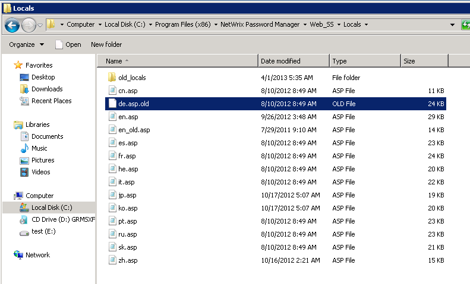

How to remove certain languages from the list displayed on the Self-Service portal?
In order to remove languages from the webpage, please perform the following steps:
EXAMPLE: to remove German, rename the de.asp file to
de.asp.old

In order to remove languages from the webpage, please perform the following steps:
- Open the Web_SSLocals subfolder of the Password Manager installation directory
- Change the file extension for all languages that should not be displayed on the web portal
- Execute iisreset command on the web-server
| File | Language |
|---|---|
| cn.asp | Chinese |
| de.asp | German |
| en.asp | English |
| es.asp | Spanish |
| fr.asp | French |
| he.asp | Hebrew |
| it.asp | Italian |
| jp.asp | Japanese |
| ko.asp | Korean |
| pt.asp | Portuguese |
| ru.asp | Russian |
| sk.asp | Slovak |
| zh.asp | Traditional Chinese |
NOTE: English (en.asp) cannot be removed by design of the software